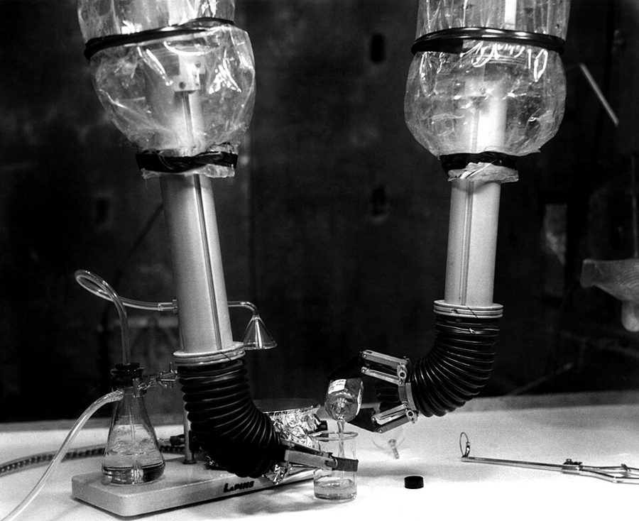
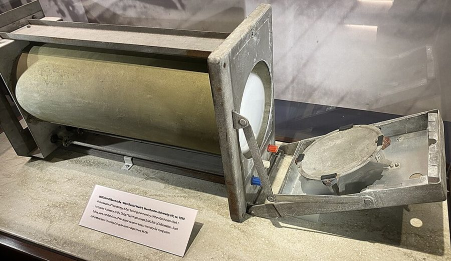
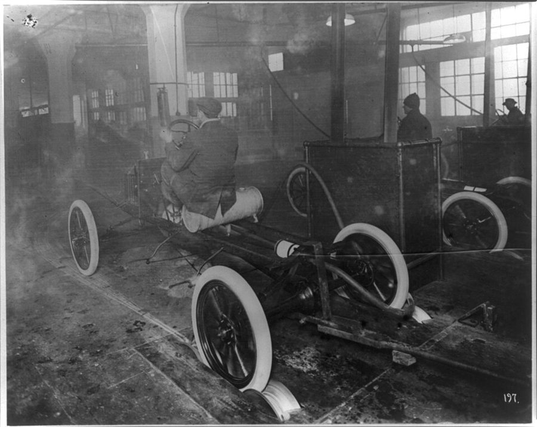
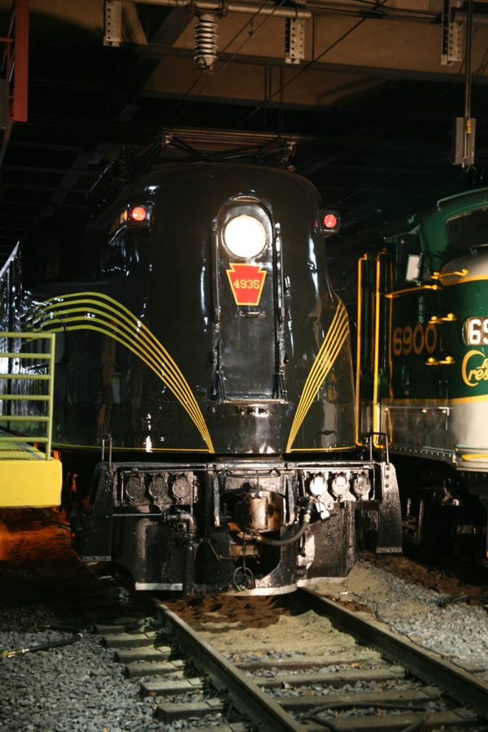

这一章在做什么
还在回忆里，没有回到讲故事的那个晚上。前半讲猫：Dan 把「怎么对待一只猫」讲成了一套外交礼仪，中间夹着他和 Belle 的两段对话。后半是全章最硬的工程段落：他盘算一台新机器，手、眼、耳、脑一项一项过，行话密，句子长。
最后一小节是 Dan 和 Miles 的短对话，话不多，句句顶着。读猫的部分留意 Belle 怎么说、怎么做；读机器的部分不必每个词都懂，抓住一点：它靠什么「记住」怎么干活。

美国橡树岭国家实验室「热室」里的机械手。操作的人在屏蔽墙另一侧，隔着厚玻璃握着一对手柄，这边的夹爪跟着动。Dan 这一页里盘算的「手」就是这种东西。
美国能源部（Ed Westcott 摄），公有领域，维基共享资源 人物
这一页没有新人物。下面只写到上一页结束时你知道的。
Dan Davis 叙述者「我」 Hired Girl 公司的总工程师兼董事长，握着公司的控制权。只管技术，不管生意。
Pete Dan 的公猫 对 Belle 视而不见。
Belle Darkin Dan 的未婚妻 公司的秘书兼司库。答应嫁给 Dan，但要等生意做起来；手里有 Dan 送的一部分股份。
Miles Gentry 合伙人 Dan 的战友，公司的总裁兼总经理，管生意。两人为一件产品何时投产吵过一次。
场景地图
这一页是第 2 章的第 60–111 段，本站按场景分成 5 段。粗体是每个场景开头的几个词，照着它在书里找位置；读完一个场景回来打个勾。
Pete was another matter, and …约 650 词 猫和 Belle。先是一段「猫的礼仪」，典故多；再是一件小事和事后的谈话。 But the subject of Pete …约 300 词 商量婚后住哪。几乎全是对话，留意 Dan 那句反问是玩笑还是动了气。 I was glad to drop …约 700 词 一台新机器的设想：要它干什么，手、眼、耳从哪来。工程词最密。 Here is where the Thorsen …约 400 词 机器的「脑」。全页最难的一段，先看「书里的世界」的第二张图再读。 MILES LOOKED OVER the first …约 300 词 Miles 来看样机。对话短，各说各的；留意两人报的数字。
背景：作者默认你知道的事
这些都是真实世界里的东西。上一页讲过的（Q 许可、机器龟、专利）不再重复。
场景 1 「a harmless, necessary cat」出自莎士比亚《威尼斯商人》第四幕。Shylock 在法庭上说，人的好恶没有道理可讲：有人见不得张着嘴的烤猪，有人一看见猫就发狂，哪怕那是一只「无害的、家里少不了的猫」。
Dan 把原话掐头去尾拿来用，所以加了引号。cannot abide （受不了）也是剧里的词。
场景 1 为猫割袖子的 mandarinmandarin 是西方人对中国古代官员的叫法。这个故事流传最广的版本，主角是伊斯兰教的先知穆罕默德：猫睡在他的袖子上，他要起身去礼拜，就把袖子割了。
中国的「断袖」讲的是汉哀帝，睡在袖子上的是人，不是猫。Dan 记成了一位中国官员，书里这个版本出处不明。
场景 2 Bel-Air洛杉矶西边山坡上的豪宅区，1920 年代开发，住的是电影明星和富商。a Bel-Air estate 等于说「发了财以后的大宅」。
ranchette 则是城外带一小块地的平房，离莫哈韦沙漠里的工厂近。两个词放在一起，是两种过日子的想法。
场景 3 Emancipation Proclamation《解放奴隶宣言》，林肯总统在南北战争中的 1863 年签发，宣布南方叛乱各州的奴隶获得自由。美国学生人人背过。
Dan 给自己的新机器封了个「第二次」。
场景 3 核工厂里的「手」和「眼」反应堆和「热室」（hot cell）里的东西有放射性，人不能碰，得隔着一两米厚的混凝土墙，用机械手去拿、去倒、去称，再通过铅玻璃窗或潜望镜看。
这类设备在 1950 年代已经是能下单买的成品（见页首的照片）。Dan 的思路是：既然有人做了，我就买。
场景 3 晶体管和印刷电路晶体管 1947 年在贝尔实验室发明，1954 年才有第一台晶体管收音机上市。这本书写的 1956 年，它和印刷电路都还是新东西，意思是「以前要一柜子真空管的电路，现在能塞进一个小盒子」。
Dan 那句话是在回答：这么多电路，机器的脑袋里放得下吗。
场景 4 Bell Labs，和真的「记忆管」
Williams 管，约 1950 年，英国曼彻斯特大学 Mark 1 计算机的存储器。一只管子存两千多个比特。
照片：ArnoldReinhold，CC BY-SA 4.0，维基共享资源（摄于美国计算机历史博物馆） 贝尔实验室（Bell Labs）是 AT&T 电话公司的研究所，当时全世界最强的工业实验室。说「连它都没太弄懂」，是说这东西很深。
用电子管存数据在 1950 年代是真事：最早的计算机内存就是一排阴极射线管，靠屏幕上的电荷点记 0 和 1。书里的管子比它能干得多，见下一节。
场景 5 martini 和 vermouth马提尼是金酒（gin）兑一点味美思（vermouth，一种加香料的葡萄酒）。味美思放得越少，酒越「干」。1950 年代讲究的人以少为荣，嫌别人调的马提尼味美思太多是一句常见的挑剔。
场景 5 Model T
福特 Highland Park 工厂，Model T 的底盘从装配线上开下来。
美国国会图书馆，公有领域，维基共享资源 福特 1908 年推出的车，卖到 1927 年，一共造了一千五百多万辆。它简陋、便宜、只求能跑，靠流水线把价钱压到工人也买得起。
说某样东西是「Model T」，就是说它是那个最基本、先卖起来再说的版本。
场景 5 Loewy
宾夕法尼亚铁路的 GG1 电力机车。Loewy 把原型车满是铆钉的外壳改成了光滑的焊接车身，加上这几条金线。
照片：Cliff，CC BY 2.0，维基共享资源 Raymond Loewy，20 世纪中叶美国最有名的工业设计师。机车、Studebaker 汽车、灰狗长途巴士、Lucky Strike 烟盒的外观都出自他的事务所。
他的主张是好看的东西卖得多。从他那里挖一个人来，意思是请最贵的行家给产品做外形（styling）。
书里的世界
这一页的设定集中在一台机器上。它的身体是 1950 年代真能买到的零件拼的，脑子是作者造的。
脑：Thorsen 记忆管
方脑袋里装得下一百只，一只管一样家务
眼和耳：买现成的
眼来自核工业设备厂，耳来自收音机电视厂
手：核工业的机械手
手臂像 lazy tongs 一样伸缩，脖子也能伸长
底盘：电动轮椅
样机的大小和重量都按它来定
Flexible Frank：Dan 设想的通用家务机器
本站示意图，按第 90–101 段画的。样子是本站猜的；书里对它外形的描述只有一句，在场景 4 的最后。
lazy tongs：一串交叉铰接的杆
收拢
两头一捏，就伸出去这么长
本站示意图。上图手臂上的锯齿线就是它。老式的伸缩镜架、升降台用的是同一种机构。
人带着机器做一遍
手动控制
管子「记住」全过程
Thorsen memory tube
以后自己重做
不用人看着，多少遍都行
“judgment” 电路
边做边找预设的条件，对不上就打断
guard 电路
碰上没录过的情况：停下，喊人
管子可以电子复制：一台学会了，别的机器插上就会
本站示意图，按第 98–101 段画的。用程序员的话说：录一段宏，加上条件触发，再包一层「遇到异常就停机报警」。
书里的说法 在书里是什么 真实世界里 Flexible Frank Dan 想造的通用家务机器：一台顶所有专用机器，价钱和一辆好车差不多。他不愿叫它 robot，也没打算做成人形。 至今没有能包办家务的通用机器人。 Thorsen memory tube 一种电子管，能记下机器被人带着做过的一整套动作，以后照做。洲际导弹靠它「思考」，洛杉矶的交通控制用的是低配版。原理没讲。 虚构。但「带着做一遍、记下来、照做」是真的：George Devol 1954 年申请了这种机械臂的专利，第一台 Unimate 1961 年进了通用汽车的工厂。 “judgment” 电路 / hunting circuit 附加电路，让机器边做边在给定范围里「找」某个条件，找到了再执行，对不上就打断。Dan 强调这不算判断力。 控制工程里 hunting 指系统在目标值附近来回找。 guard circuit 罩在外面的保护电路：遇到指令没覆盖的情况，机器原地不动，叫人。 — Nursemaid Nan、Houseboy Harry、Gardener Gus Dan 顺口编的一串专用机器的名字，每个都押头韵，和 Hired Girl、Window Willie 一个起法。它们不存在，他要的正是不必造它们。 — AT&T 出租的接电话装置 已经有了，所以 Frank 不必会接电话。 电话答录机 1950 年代已有产品，1980 年代才进入普通人家。 door answerer 新房子普遍装的应门装置。没细说。 楼宇对讲，后来的可视门铃。 能上下楼梯的电动轮椅 市面上有的现成产品。 电动轮椅 1950 年代已有；能爬楼梯的要等到 2000 年代初的 iBOT。 random-choice circuit 随机选择电路，用来让机器偶尔故意失手。 游戏里电脑对手「放水」，做法一样。
这一章的行话，先用中文过一遍
场景 3、4 的句子长，其实只用到两个工程概念和一条开发流程。
反馈（feedback）和伺服（servo）
想要的动作
差
伺服 servo
机械手
实际的动作
传感器
量回来，相减
差多少就补多少：negative feedback
本站示意图。人伸手拿鸡蛋也是这个回路：眼睛和指尖不停地报告「还差多少」。
servo 是按指令转到指定位置、用指定力气的电机。光有电机不够，还得有传感器把「实际做到了多少」量回来，和「想要多少」相减，差多少补多少，这叫负反馈。
反馈越精细，手越稳：能敲钉子，也能拿鸡蛋而不捏碎。书里说手要「同时受视觉、听觉、触觉三路反馈控制」，就是三个这样的回路叠在一起。
基础研究、开发、投产
basic research 是弄清新原理，要一大群人、很多年。development 是拿已经有的原理和零件拼出新东西。书里把已有的技术叫 former art ，现在的说法是 prior art（现有技术），专利审查查的就是它。
拼出来的第一台是样机（pilot model）；改到能成批生产叫 engineer for production ；最后才是外形设计（styling）和上市。一个人能做的是中间那一段。
英文 中文 一句话 feedback 反馈 把输出量回来，再送回输入端。 servo 伺服机构 wide-range servos：力气和行程范围都大的伺服。 transistor 晶体管 代替真空管的小型元件。 printed circuit 印刷电路 连线直接印在板上。 chassis 底盘 装轮子和动力的那一层，别的东西都架在它上面。 parameters 参数，限定条件 a set of parameters：一组设计时不能超出的边界，比如尺寸和载重。 standard parts 标准件 目录上能直接订到的零件。 former art 已有技术 今天说 prior art。 control circuit 控制电路 指挥机器动作的那部分电路。 programming 编程 1956 年这个词刚开始用在机器上。 cycle （一次完整的）动作循环 机床行话：从头到尾做完一遍。 microanalysis 微量分析 化学实验里处理极少量样品的操作，要求手极稳。 pilot model 样机 验证设计用的第一台。 styling 外形设计 不动内部结构，只管好不好看。
词与短语
词条按在书里出现的顺序排，按场景分组。斜体小字是它所在的那句话里的几个词，方便你在书里找到。
场景 1 Pete was another matter, and …
another matter
… Pete was another matter, and if …
另一回事（没那么好办）
incipient bald spot
… loved my incipient bald spot and …
刚冒头的一小块秃顶
incipient：刚开始的。
oh, sure, sure!
… “liked” my cat—oh, sure, sure! She …
是啊，可不是嘛
反话。前面 liked 加了引号，后面一口气列了她「喜欢」的一串东西，都是这个口气。
a cat person
… to fake to a cat person. There …
爱猫的那类人
a … person：喜欢某样东西的人。a dog person、a morning person。fake 是装。
cannot abide
… who “cannot abide a harmless, necessary …
受不了
老派说法。出处见「背景」。
protocol
… cats—and cat protocol is more rigid …
礼仪规矩
外交上的礼宾规程。程序员熟悉的「协议」是从这个意思来的。
dignidad de hombre
… as the dignidad de hombre of …
西班牙语：男人的尊严
你可以冒犯它，代价是你的命。
touchy
… and they are very touchy. If …
一碰就恼
不是「爱摸人的」。inflated ego 是膨胀的自尊心。
cater to
… anyone’s time to cater to them …
迁就，伺候
caterer 是承办酒席的人。
sharp cheese
… someone who detests sharp cheeses why …
味道冲的奶酪
sharp 说味道是「冲、烈」。Limburger 是出名的臭奶酪。
mandarin
… sympathize with the mandarin who cut …
中国古代的官员
不是普通话，也不是橘子。见「背景」。
which was well
… long time—which was well, as I …
这倒也好
well 作形容词：妥当。smack 是扇一巴掌。
cat-petting
… but you weren’t cat-petting him; you …
用摸猫的法子摸
Dan 现造的动词，和 dog-petting 相对。pat 是拍，stroke 是顺着毛捋。
put up with
… it will put up with a …
忍受
be around
… “I haven’t been around them much, …
和……相处，接触
be around cats / kids：身边有猫、有孩子。
he-male
… Pete is a he-male cat. No, …
货真价实的公（猫）
he-man（硬汉）的变体。Belle 刚才管 Pete 叫 she。
Forevermore
… “What? Forevermore, why?” …
天哪
当感叹词用，老式的淑女口气。本义是「永远」。
stalk off
… laughing; he’ll simply stalk off and …
昂着头走开
stalk 是僵着腿大步走，带着气。
keep one’s distance
… him, but she kept her distance and …
保持距离
后半句 he kept his 省了 distance。
场景 2 But the subject of Pete …
set the date
… She still wouldn’t set the date, but …
定下婚期
the date 单说就是婚礼的日子。
ranchette
… I wanted a ranchette near the …
带一小块地的郊外平房
ranch（牧场）加上表示「小」的 -ette。
flat
… she favored a flat in town …
公寓
英国说法，美国人平时说 apartment。Belle 用这个词，有点拿腔调。
estate
… could afford a Bel-Air estate. …
带大片庭院的豪宅
上一章的 estate 是「全部财产」。
study up on
… I’ve been studying up on cats, …
专门去恶补
have him altered
… We’ll have him altered. Then …
带它去做绝育
alter 本义是改动。给宠物做绝育的委婉说法，还有 fixed、neutered。
eunuch
… Make a eunuch of that old …
太监
Mother knows best
… the old familiar “Mother knows best,” giving …
「听妈妈的没错」那副口气
tut-tut 是咂嘴表示不以为然的声音，这里当动词。
stock arguments
… best,” giving the stock arguments of …
老一套的理由
stock 作形容词：现成的、千篇一律的。和股票无关。
cut in on
… I cut in on her. “Why …
打断（某人的话）
docile
… I’d be much more docile and …
温顺听话
preposterous
… red. “You’re being preposterous.” …
荒唐
You’re being …：你现在的表现很……（不是说你这人一向如此）。
bide one’s time
… shut up and bided her time. …
不动声色地等机会
have a lot of cat in her
… she had a lot of cat …
身上有不少猫的脾性
have a lot of X in someone：某人身上有很多 X 的成分。
场景 3 I was glad to drop …
up to here in
… I was up to here in …
整个人埋在……里
说的时候手比到脖子或眉毛：都淹到这儿了。
a bee in my bonnet
… I had a bee in my …
心里放不下的一个念头
帽子里钻进一只蜜蜂。bonnet 是老式女帽。
much-abused word
… that is a much-abused word and …
被用滥了的词
robot 这个词 1920 年才有，出自捷克剧作家恰佩克的戏，到 1950 年代已经被通俗小说用成了「铁皮人」。
a stable of
… Instead of a stable of Hired …
一整批（同类的东西）
本义是马厩，引申为同一个老板手下的一班人马。同一句里的 the Chinese servant 指旧时加州人家雇的华人男仆，当年的小说把他们写成无所不能的管家。
old saw
… abolish the old saw about how …
老话，俗语
saw 在这里是格言，不是锯子。那句老话是「女人的活儿永远干不完」。
drudgery
… repetitious and unnecessary drudgery; as an …
枯燥的苦差事
an awful lot of
… there was an awful lot of …
非常非常多
awful 只是加强语气，没有「糟糕」的意思。
tend
… make beds, and tend babies—at least …
照看
tend babies、tend a fire。和 tend to（倾向于）不是一回事。
yards of concrete shielding
… from behind yards of concrete shielding …
好几码厚的混凝土屏蔽墙
1 码约 0.91 米。
house
… of a dozen radio-TV houses—though I …
商号，厂商
publishing house（出版社）、上一页的 discount house 都是这个用法。
lazy tongs
… arms extend like lazy tongs. Should …
剪刀式伸缩夹
一串交叉的铰接杆，一捏就伸出去老远，「懒人」不用起身就够得着东西。「书里的世界」里有图。
the real hitch
… The brain was the real hitch. …
真正卡住的地方
hitch：小障碍。上一页的 hitch 是一期兵役，另一个意思。
that stuff between the ears
… has that stuff between the ears …
两只耳朵中间的那点东西：脑子
a docile moron
… wanted a docile moron, capable of …
一个听话的笨蛋
moron、idiot 在这一章都是 Dan 说机器「只会照办」的词。
场景 4 Here is where the Thorsen …
come in
… the Thorsen memory tubes came in. …
派上用场
Here is where … comes in：这时候就轮到……出场了。
strike back
… missiles we had struck back with …
反击
一句话交代：那场战争里是对方先动的手。
go into
… No need to go into theory …
细讲，深入
hook … into
… you can hook a Thorsen tube …
把……接进（电路）
so-and-so … such-and-such
… “look for so-and-so within such-and-such limits; …
某某……如此这般
英语里的占位符，等于代码里的 foo 和 bar。
back-seat driver
… “judgment” circuits (moronic back-seat drivers, they …
坐在后座上指挥司机的人
自己不开车，光在旁边喊「慢点」「左拐」。Dan 拿它形容只会打断、不会干活的电路。
impress into
… that originally impressed into the Thorsen …
压印进，刻录进
scrape the dishes
… the table and scrape the dishes …
把盘子里的剩菜刮掉
stick a pin in the baby
… never, never stick a pin in …
把别针扎到婴儿身上
那时的尿布是布的，用安全别针别住。a wet baby 是尿湿了的婴儿。
squawl for help
… hold still and squawl for help …
哇哇地喊人
squall 的另一种拼法，婴儿嚎哭用的词。
use up
… you wouldn’t use up babies or …
消耗掉
把婴儿和盘子并列成「耗材」，工程师的冷笑话。
make love to
… like a hat rack making love …
向……求爱，调情
1950 年代以前这个短语主要指追求、亲热，没有今天那么直白。hat rack 是立式衣帽架。
场景 5 MILES LOOKED OVER the first …
fix
… tell him to fix yours one …
调（酒），做（饭）
美国口语。fix a drink、fix dinner。不是修理。
engineer for production
… can he be engineered for production?” …
改成能成批生产的设计
engineer 作动词。
fiddle with
… I’d like to fiddle with him …
慢慢摆弄
fiddle 是小提琴。轻描淡写的说法，后面接的却是「十年」。
a Model-T job
… and have a Model-T job ready …
一个简陋但能卖的初版
job 在口语里可以指「一件做出来的东西」。Model T 见「背景」。
The devil you will
… “The devil you will. This is …
你休想
The devil + 对方刚说的助动词：强烈否定。比 The hell you will 文雅一点。
magnum opus
… This is my magnum opus. I’m …
拉丁语：毕生的代表作
turn loose
… not going to turn him loose …
放出去
wind the cat and wash the baby
… not only wind the cat and …
「给猫上弦，给娃洗澡」
睡前的家务老话是 wind the clock and put out the cat：给钟上弦，把猫放出门。Dan 故意说串了。all-out 是「彻底地」。
not a day over
… Dan, and not a day over. …
一天也不能多
hire somebody away from
… going to hire somebody away from …
从……那里挖一个人过来
boss
… learn that I boss the engineering? …
（由我）说了算
boss 作及物动词。
turn over to
… Once I turn him over to …
移交给
和上面的 turn loose 只差一个小词。a split second 是一刹那。
值得停下来的句子
“Why don’t you arrange it for both of us?”
— 场景 2，Dan 对 Belle。本站译：「你怎么不给我们俩一块儿约上？」
it 指的是 Belle 刚提的那个手术。Dan 没有反驳她的任何一条理由，而是把她的话原样套到自己身上：不疼，对他好，他会更听话。
这是他抬杠的另一种手法，不换词义，换对象。Belle 的回答是 You’re being preposterous ，Dan 回了三个词，把这顶帽子扣了回去。
He looked like a hat rack making love to an octopus...but, boy, how he could polish silverware!
— 场景 4 的最后一句。本站译：他看上去像一个衣帽架在跟一只章鱼亲热……可是天哪，他擦银器擦得真叫一个亮！
前半句是工程师看自己样机的眼光：一根杆子，一堆伸来伸去的手臂，难看。but, boy, how … 是口语里的感叹，boy 只是语气词。
留意代词：刚开始设想时 Dan 说的是 a gadget、it；从列出它该干哪些活起就改口叫 he 了，到这一句已经像在说一个伙计。
“It’s still too much vermouth.”
— 场景 5 的最后一句，Miles。本站译：「味美思还是放多了。」
Dan 刚说完「工程归我管」。Miles 不接这个话，回到酒上。这是他在这场对话里第二次说这句话：第一次是评价机器调的酒，这一次是用它结束争论，等于没有让步，也没有认输。
still 一个词把两次连了起来。
检查一下理解
先在心里答，再点开。答错的那题，回书里把对应的场景再读一遍。
1.（场景 1）Belle「liked」my cat，liked 为什么加引号？后面那串「她喜欢我的……」是在夸她吗？
是反话。Dan 现在回头看，认为她的喜欢是装的：猫、他的秃顶、他挑的餐馆，她一概说喜欢。当年他信了，讲故事的时候已经不信。
2.（场景 1）Pete 抓了 Belle。Dan 认为错在谁？他打过 Pete 吗？
错在 Belle 的摸法：她像拍狗那样拍它，动作突然，也不看猫乐不乐意。Dan 承认 Pete 当时要是没跑，自己会扇它，但 Pete 跑了，所以他从来没打过它。他接着说打猫比不打还糟。
3.（场景 1）Belle 说「She’s pretty touchy」。这句话露了什么底？
她连 Pete 是公猫都没留意，Dan 当场纠正成 He。她自己也承认没怎么和猫相处过。这和她前面说的「我当然喜欢猫」对不上。
4.（场景 2）altered 是什么意思？这场争执是怎么收场的？
给 Pete 做绝育，Belle 说这样它就能住公寓了。Dan 用一句反问顶了回去，两人互相说了一句「你荒唐」，Belle 从此不提。但 Dan 特意补了一句：她只是闭嘴等时机，从不放弃。
5.（场景 3）Dan 为什么规定这台机器只能用标准件、不许涉及新原理？
因为他只有一个人。弄清新原理是基础研究，一个人做不了；他能做的是拿别人已经做成的东西来拼。所以手、眼、耳都去买，底盘用现成的轮椅。只有脑子他绕不过去。
6.（场景 4）装了 Thorsen 管的机器有判断力吗？遇到没教过的事会怎样？
Dan 明说没有，他认为机器永远不会有。所谓 judgment 电路只是按预设条件去找、去打断。遇到指令没覆盖的情况，外层的保护电路让它原地停下喊人，这样才不会摔了盘子、伤了孩子。
7.（场景 4）第 99 段说机器「第一次遇到脏盘子」就会洗。没教过怎么会？
管子里的记忆可以电子复制。一台机器被带着做过一遍，它那只管子的内容就能拷到别的管子上，插进另一台机器的脑袋，那一台没做过也会。
8.（场景 5）关于多久投产，两人各报了什么数？谁让步了？
Dan 先说想摆弄十年，又改口五年出一个有限的型号。Miles 先说六个月出个简版，后来松到一年，说一天不能多。Dan 的回答是工程归他管，交出去之前一秒都不提前。谁也没让步，Miles 把话岔回酒上。
留给后面的问题
这些是这一页的文字自己提出来、但没有回答的。
Dan 说 Belle 遇到分歧从不吵，只是「等时机」。她等到了吗？
Miles 要一年，Dan 要五年。这件事就这样搁下了吗？